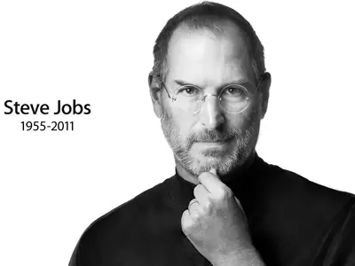

Steve Jobs in Pictures
Biography
Steven Paul "Steve' Jobs was an American information technology entrepreneur and inventor. He was the cofounder, chairman, and CEO of Apple Inc, CEO and largest shareholder of Pixar Animation Studios; and founder, chairman, and CEO of NeXT Inc, Jobs is widely recognized as a pioneer of the microcomputer revolution of the 1970s, along with Apple co-founder Steve Wozniak *Creative entrepreneur whose passion for perfection and ferocious drive revolutionized six industries: personal computers, animated movies, music, phones, tablet